Survival Analysis in R
This tutorial provides an introduction to survival analysis, and to conducting a survival analysis in R.
This tutorial was originally presented at the Memorial Sloan Kettering Cancer Center R-Presenters series on August 30, 2018.
It was then modified for a more extensive training at Memorial Sloan Kettering Cancer Center in March, 2019.
Please click the GitHub icon in the header above to go to the GitHub repository for this tutorial, where all of the source code for this tutorial can be accessed in the file survival_analysis_in_r.Rmd.
Part 1: Introduction to Survival Analysis
This presentation will cover some basics of survival analysis, and the following series tutorial papers can be helpful for additional reading:
Clark, T., Bradburn, M., Love, S., & Altman, D. (2003). Survival analysis part I: Basic concepts and first analyses. 232-238. ISSN 0007-0920.
M J Bradburn, T G Clark, S B Love, & D G Altman. (2003). Survival Analysis Part II: Multivariate data analysis – an introduction to concepts and methods. British Journal of Cancer, 89(3), 431-436.
Bradburn, M., Clark, T., Love, S., & Altman, D. (2003). Survival analysis Part III: Multivariate data analysis – choosing a model and assessing its adequacy and fit. 89(4), 605-11.
Clark, T., Bradburn, M., Love, S., & Altman, D. (2003). Survival analysis part IV: Further concepts and methods in survival analysis. 781-786. ISSN 0007-0920.
Packages
Some packages we’ll be using today include:
lubridatesurvivalsurvminer
library(survival)
library(survminer)
library(lubridate)What is survival data?
Time-to-event data that consist of a distinct start time and end time.
Examples from cancer
- Time from surgery to death
- Time from start of treatment to progression
- Time from response to recurrence
Examples from other fields
Time-to-event data are common in many fields including, but not limited to
- Time from HIV infection to development of AIDS
- Time to heart attack
- Time to onset of substance abuse
- Time to initiation of sexual activity
- Time to machine malfunction
Aliases for survival analysis
Because survival analysis is common in many other fields, it also goes by other names
- Reliability analysis
- Duration analysis
- Event history analysis
- Time-to-event analysis
The lung dataset
The lung dataset is available from the survival package in R. The data contain subjects with advanced lung cancer from the North Central Cancer Treatment Group. Some variables we will use to demonstrate methods today include
- time: Survival time in days
- status: censoring status 1=censored, 2=dead
- sex: Male=1 Female=2
What is censoring?

RICH JT, NEELY JG, PANIELLO RC, VOELKER CCJ, NUSSENBAUM B, WANG EW. A PRACTICAL GUIDE TO UNDERSTANDING KAPLAN-MEIER CURVES. Otolaryngology head and neck surgery: official journal of American Academy of Otolaryngology Head and Neck Surgery. 2010;143(3):331-336. doi:10.1016/j.otohns.2010.05.007.
Types of censoring
A subject may be censored due to:
- Loss to follow-up
- Withdrawal from study
- No event by end of fixed study period
Specifically these are examples of right censoring.
Left censoring and interval censoring are also possible, and methods exist to analyze this type of data, but this training will be limited to right censoring.
Censored survival data

In this example, how would we compute the proportion who are event-free at 10 years?
Subjects 6 and 7 were event-free at 10 years. Subjects 2, 9, and 10 had the event before 10 years. Subjects 1, 3, 4, 5, and 8 were censored before 10 years, so we don’t know whether they had the event or not by 10 years - how do we incorporate these subjects into our estimate?
Distribution of follow-up time
- Censored subjects still provide information so must be appropriately included in the analysis
- Distribution of follow-up times is skewed, and may differ between censored patients and those with events
- Follow-up times are always positive
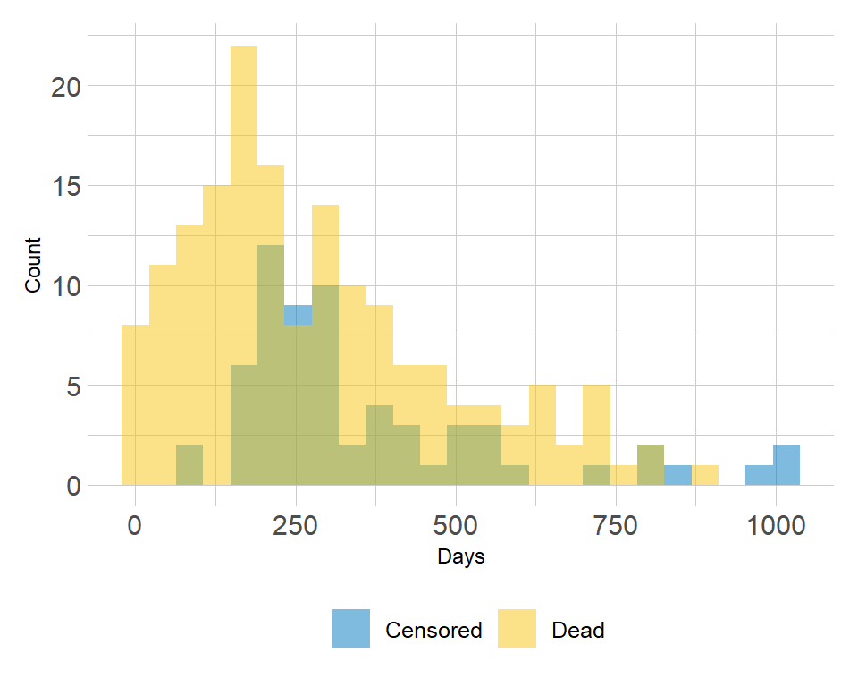
Components of survival data
For subject \(i\):
Event time \(T_i\)
Censoring time \(C_i\)
Event indicator \(\delta_i\):
- 1 if event observed (i.e. \(T_i \leq C_i\))
- 0 if censored (i.e. \(T_i > C_i\))
Observed time \(Y_i = \min(T_i, C_i)\)
The observed times and an event indicator are provided in the lung data
- time: Survival time in days (\(Y_i\))
- status: censoring status 1=censored, 2=dead (\(\delta_i\))
| inst | time | status | age | sex | ph.ecog | ph.karno | pat.karno | meal.cal | wt.loss |
|---|---|---|---|---|---|---|---|---|---|
| 3 | 306 | 2 | 74 | 1 | 1 | 90 | 100 | 1175 | NA |
| 3 | 455 | 2 | 68 | 1 | 0 | 90 | 90 | 1225 | 15 |
| 3 | 1010 | 1 | 56 | 1 | 0 | 90 | 90 | NA | 15 |
| 5 | 210 | 2 | 57 | 1 | 1 | 90 | 60 | 1150 | 11 |
| 1 | 883 | 2 | 60 | 1 | 0 | 100 | 90 | NA | 0 |
| 12 | 1022 | 1 | 74 | 1 | 1 | 50 | 80 | 513 | 0 |
Dealing with dates in R
Data will often come with start and end dates rather than pre-calculated survival times. The first step is to make sure these are formatted as dates in R.
Let’s create a small example dataset with variables sx_date for surgery date and last_fup_date for the last follow-up date.
date_ex <-
tibble(
sx_date = c("2007-06-22", "2004-02-13", "2010-10-27"),
last_fup_date = c("2017-04-15", "2018-07-04", "2016-10-31")
)
date_ex## # A tibble: 3 x 2
## sx_date last_fup_date
## <chr> <chr>
## 1 2007-06-22 2017-04-15
## 2 2004-02-13 2018-07-04
## 3 2010-10-27 2016-10-31We see these are both character variables, which will often be the case, but we need them to be formatted as dates.
Formatting dates - base R
date_ex %>%
mutate(
sx_date = as.Date(sx_date, format = "%Y-%m-%d"),
last_fup_date = as.Date(last_fup_date, format = "%Y-%m-%d")
)## # A tibble: 3 x 2
## sx_date last_fup_date
## <date> <date>
## 1 2007-06-22 2017-04-15
## 2 2004-02-13 2018-07-04
## 3 2010-10-27 2016-10-31- Note that in base
Rthe format must include the separator as well as the symbol. e.g. if your date is in format m/d/Y then you would needformat = "%m/%d/%Y" - See a full list of date format symbols at https://www.statmethods.net/input/dates.html
Formatting dates - lubridate package
We can also use the lubridate package to format dates. In this case, use the ymd function
date_ex %>%
mutate(
sx_date = ymd(sx_date),
last_fup_date = ymd(last_fup_date)
)## # A tibble: 3 x 2
## sx_date last_fup_date
## <date> <date>
## 1 2007-06-22 2017-04-15
## 2 2004-02-13 2018-07-04
## 3 2010-10-27 2016-10-31- Note that unlike the base
Roption, the separators do not need to be specified - The help page for
?dmywill show all format options.
Calculating survival times - base R
Now that the dates formatted, we need to calculate the difference between start and end time in some units, usually months or years. In base R, use difftime to calculate the number of days between our two dates and convert it to a numeric value using as.numeric. Then convert to years by dividing by 365.25, the average number of days in a year.
date_ex %>%
mutate(
os_yrs =
as.numeric(
difftime(last_fup_date,
sx_date,
units = "days")) / 365.25
)## # A tibble: 3 x 3
## sx_date last_fup_date os_yrs
## <date> <date> <dbl>
## 1 2007-06-22 2017-04-15 9.82
## 2 2004-02-13 2018-07-04 14.4
## 3 2010-10-27 2016-10-31 6.01Calculating survival times - lubridate
Using the lubridate package, the operator %--% designates a time interval, which is then converted to the number of elapsed seconds using as.duration and finally converted to years by dividing by dyears(1), which gives the number of seconds in a year.
date_ex %>%
mutate(
os_yrs =
as.duration(sx_date %--% last_fup_date) / dyears(1)
)## # A tibble: 3 x 3
## sx_date last_fup_date os_yrs
## <date> <date> <dbl>
## 1 2007-06-22 2017-04-15 9.82
## 2 2004-02-13 2018-07-04 14.4
## 3 2010-10-27 2016-10-31 6.02- Note: we need to load the
lubridatepackage using a call tolibraryin order to be able to access the special operators (similar to situation with pipes)
Event indicator
For the components of survival data I mentioned the event indicator:
Event indicator \(\delta_i\):
- 1 if event observed (i.e. \(T_i \leq C_i\))
- 0 if censored (i.e. \(T_i > C_i\))
However, in R the Surv function will also accept TRUE/FALSE (TRUE = event) or 1/2 (2 = event).
In the lung data, we have:
- status: censoring status 1=censored, 2=dead
Survival function
The probability that a subject will survive beyond any given specified time
\[S(t) = Pr(T>t) = 1 - F(t)\]
\(S(t)\): survival function \(F(t) = Pr(T \leq t)\): cumulative distribution function
In theory the survival function is smooth; in practice we observe events on a discrete time scale.
Survival probability
- Survival probability at a certain time, \(S(t)\), is a conditional probability of surviving beyond that time, given that an individual has survived just prior to that time.
- Can be estimated as the number of patients who are alive without loss to follow-up at that time, divided by the number of patients who were alive just prior to that time
- The Kaplan-Meier estimate of survival probability is the product of these conditional probabilities up until that time
- At time 0, the survival probability is 1, i.e. \(S(t_0) = 1\)
Creating survival objects
The Kaplan-Meier method is the most common way to estimate survival times and probabilities. It is a non-parametric approach that results in a step function, where there is a step down each time an event occurs.
- The
Survfunction from thesurvivalpackage creates a survival object for use as the response in a model formula. There will be one entry for each subject that is the survival time, which is followed by a+if the subject was censored. Let’s look at the first 10 observations:
Surv(lung$time, lung$status)[1:10]## [1] 306 455 1010+ 210 883 1022+ 310 361 218 166Estimating survival curves with the Kaplan-Meier method
- The
survfitfunction creates survival curves based on a formula. Let’s generate the overall survival curve for the entire cohort, assign it to objectf1, and look at thenamesof that object:
f1 <- survfit(Surv(time, status) ~ 1, data = lung)
names(f1)## [1] "n" "time" "n.risk" "n.event" "n.censor" "surv"
## [7] "std.err" "cumhaz" "std.chaz" "type" "logse" "conf.int"
## [13] "conf.type" "lower" "upper" "call"Some key components of this survfit object that will be used to create survival curves include:
time, which contains the start and endpoints of each time intervalsurv, which contains the survival probability corresponding to eachtime
Kaplan-Meier plot - base R
Now we plot the survfit object in base R to get the Kaplan-Meier plot.
plot(survfit(Surv(time, status) ~ 1, data = lung),
xlab = "Days",
ylab = "Overall survival probability")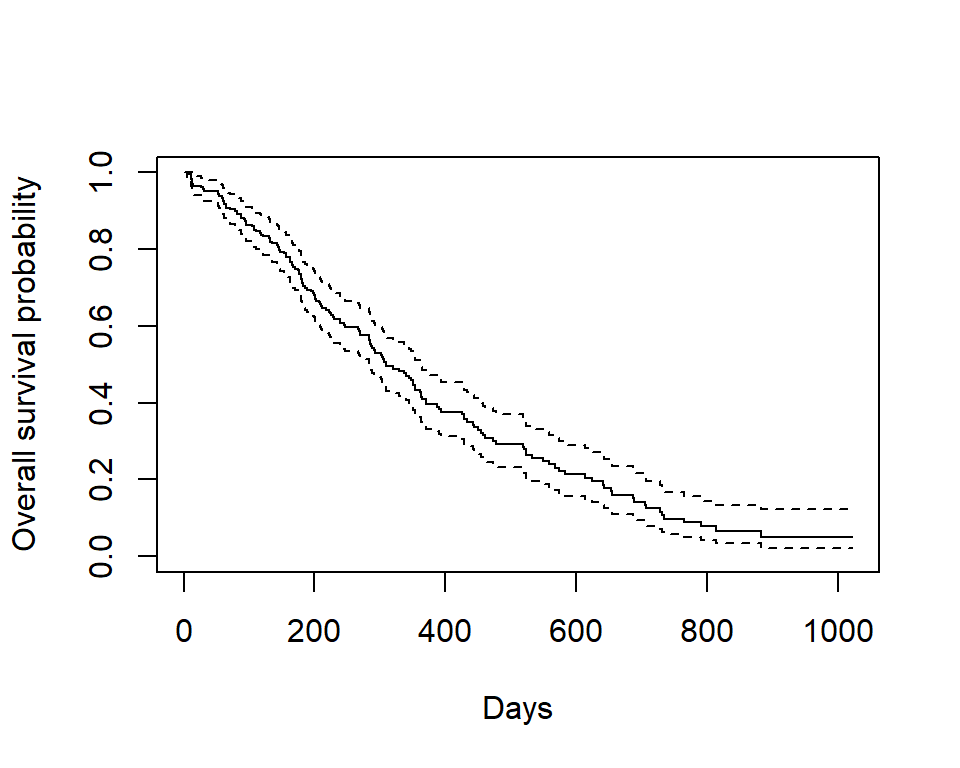
- The default plot in base
Rshows the step function (solid line) with associated confidence intervals (dotted lines) - Horizontal lines represent survival duration for the interval
- An interval is terminated by an event
- The height of vertical lines show the change in cumulative probability
- Censored observations, indicated by tick marks, reduce the cumulative survival between intervals. (Note the tick marks for censored patients are not shown by default, but could be added using the option
mark.time = TRUE)
Kaplan-Meier plot - ggsurvplot
Alternatively, the ggsurvplot function from the survminer package is built on ggplot2, and can be used to create Kaplan-Meier plots. Checkout the cheatsheet for the survminer package.
ggsurvplot(
fit = survfit(Surv(time, status) ~ 1, data = lung),
xlab = "Days",
ylab = "Overall survival probability")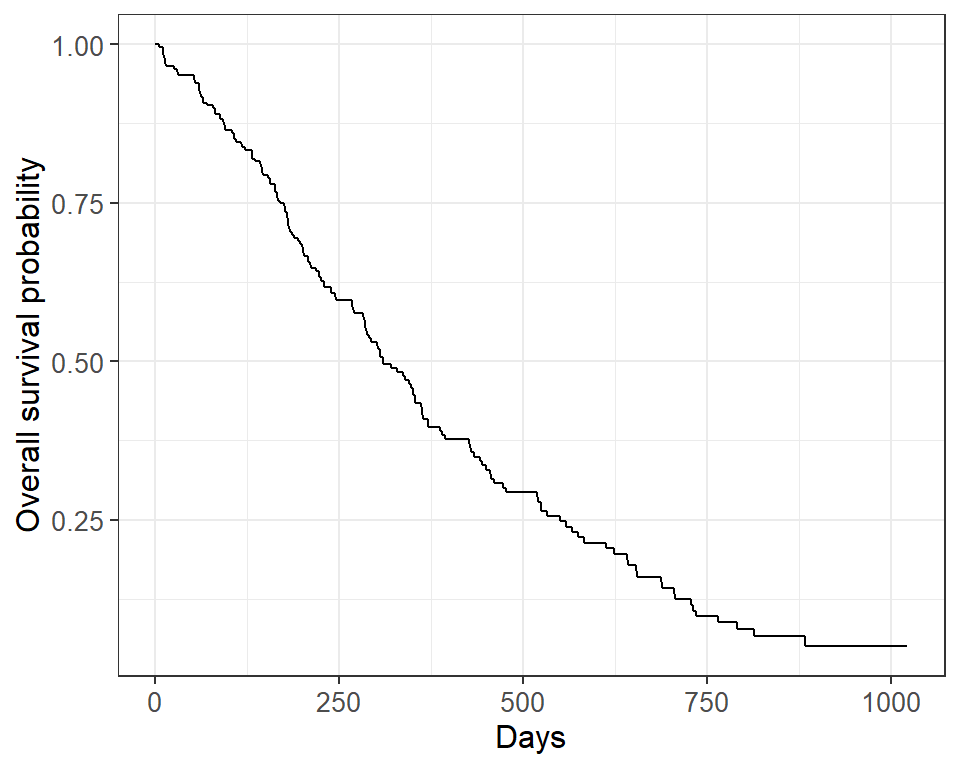
- The default plot using
ggsurvplotshows the step function (solid line) with associated confidence bands (shaded area). - The tick marks for censored patients are shown by default, somewhat obscuring the line itself in this example, and could be supressed using the option
censor = FALSE
Estimating \(x\)-year survival
One quantity often of interest in a survival analysis is the probability of surviving beyond a certain number (\(x\)) of years.
For example, to estimate the probability of survivng to \(1\) year, use summary with the times argument (Note the time variable in the lung data is actually in days, so we need to use times = 365.25)
summary(survfit(Surv(time, status) ~ 1, data = lung), times = 365.25)## Call: survfit(formula = Surv(time, status) ~ 1, data = lung)
##
## time n.risk n.event survival std.err lower 95% CI upper 95% CI
## 365 65 121 0.409 0.0358 0.345 0.486We find that the \(1\)-year probability of survival in this study is 41%.
The associated lower and upper bounds of the 95% confidence interval are also displayed.
\(x\)-year survival and the survival curve
The \(1\)-year survival probability is the point on the y-axis that corresponds to \(1\) year on the x-axis for the survival curve.
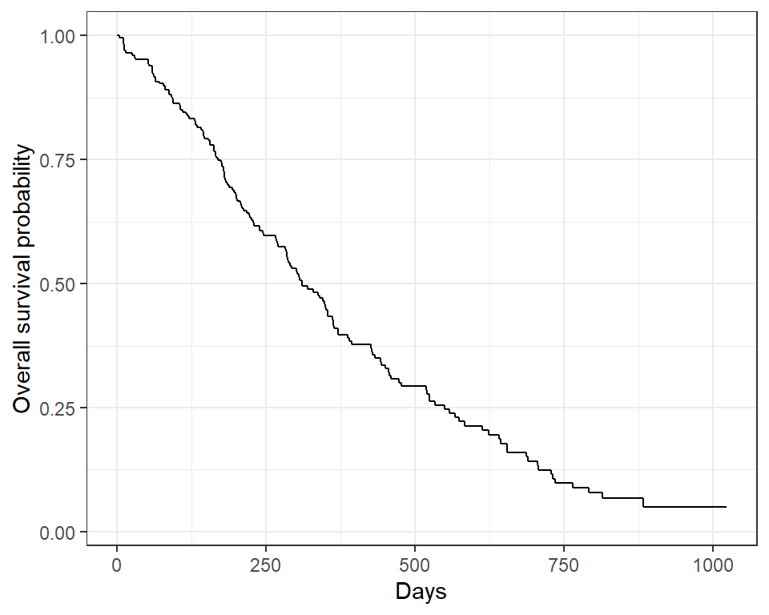
\(x\)-year survival is often estimated incorrectly
What happens if you use a “naive” estimate?
121 of the 228 patients died by \(1\) year so:
\[\Big(1 - \frac{121}{228}\Big) \times 100 = 47\%\] - You get an incorrect estimate of the \(1\)-year probability of survival when you ignore the fact that 42 patients were censored before \(1\) year.
- Recall the correct estimate of the \(1\)-year probability of survival was 41%.
Impact on \(x\)-year survival of ignoring censoring
- Imagine two studies, each with 228 subjects. There are 165 deaths in each study. No censoring in one (orange line), 63 patients censored in the other (blue line)
- Ignoring censoring leads to an overestimate of the overall survival probability, because the censored subjects only contribute information for part of the follow-up time, and then fall out of the risk set, thus pulling down the cumulative probability of survival
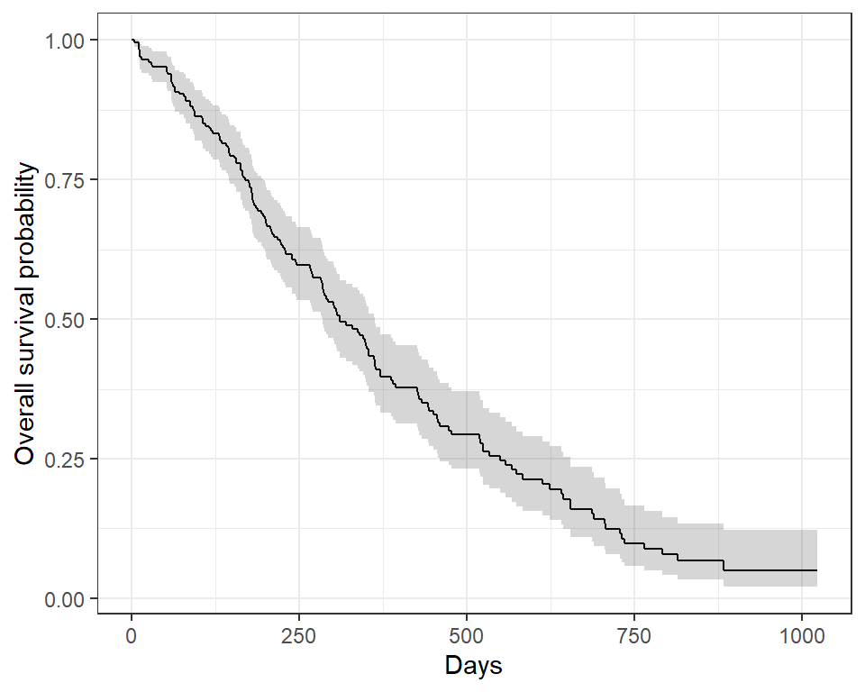
Estimating median survival time
Another quantity often of interest in a survival analysis is the average survival time, which we quantify using the median. Survival times are not expected to be normally distributed so the mean is not an appropriate summary.
We can obtain this directly from our survfit object
survfit(Surv(time, status) ~ 1, data = lung)## Call: survfit(formula = Surv(time, status) ~ 1, data = lung)
##
## n events median 0.95LCL 0.95UCL
## 228 165 310 285 363We see the median survival time is 310 days The lower and upper bounds of the 95% confidence interval are also displayed.
Median survival time and the survival curve
Median survival is the time corresponding to a survival probability of \(0.5\):
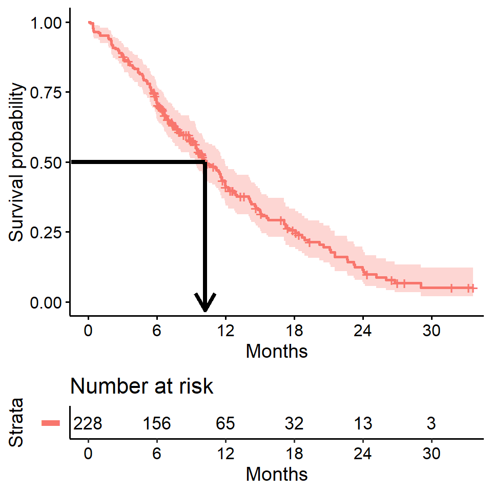
Median survival is often estimated incorrectly
What happens if you use a “naive” estimate?
Summarize the median survival time among the 165 patients who died
lung %>%
filter(status == 2) %>%
summarize(median_surv = median(time))## median_surv
## 1 226- You get an incorrect estimate of median survival time of 226 days when you ignore the fact that censored patients also contribute follow-up time.
- Recall the correct estimate of median survival time is 310 days.
Impact on median survival of ignoring censoring
- Ignoring censoring creates an artificially lowered survival curve because the follow-up time that censored patients contribute is excluded (purple line)
- The true survival curve for the
lungdata is shown in blue for comparison
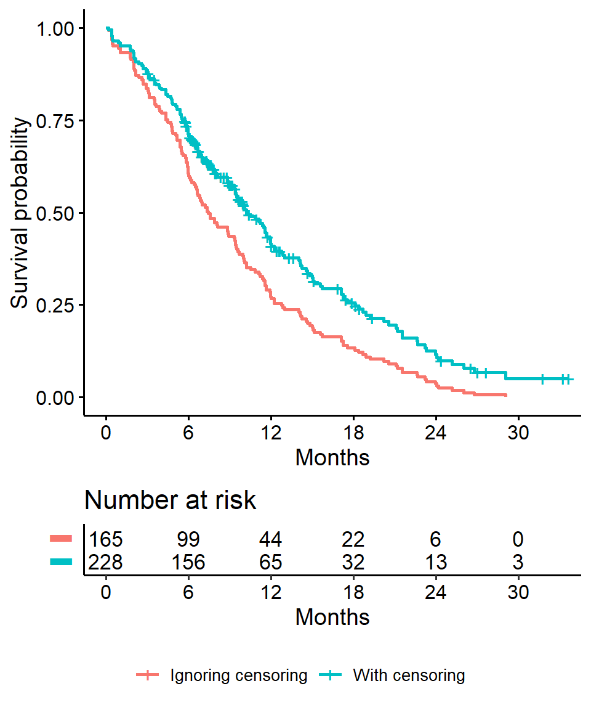
Comparing survival times between groups
- We can conduct between-group significance tests using a log-rank test
- The log-rank test equally weights observations over the entire follow-up time and is the most common way to compare survival times between groups
- There are versions that more heavily weight the early or late follow-up that could be more appropriate depending on the research question (see
?survdifffor different test options)
We get the log-rank p-value using the survdiff function. For example, we can test whether there was a difference in survival time according to sex in the lung data
survdiff(Surv(time, status) ~ sex, data = lung)## Call:
## survdiff(formula = Surv(time, status) ~ sex, data = lung)
##
## N Observed Expected (O-E)^2/E (O-E)^2/V
## sex=1 138 112 91.6 4.55 10.3
## sex=2 90 53 73.4 5.68 10.3
##
## Chisq= 10.3 on 1 degrees of freedom, p= 0.001Extracting information from a survdiff object
It’s actually a bit cumbersome to extract a p-value from the results of survdiff. Here’s a line of code to do it
sd <- survdiff(Surv(time, status) ~ sex, data = lung)
1 - pchisq(sd$chisq, length(sd$n) - 1)## [1] 0.001311165Or there is the sdp function in the ezfun package, which you can install using devtools::install_github("zabore/ezfun"). It returns a formatted p-value
ezfun::sdp(sd)## [1] 0.001The Cox regression model
We may want to quantify an effect size for a single variable, or include more than one variable into a regression model to account for the effects of multiple variables.
The Cox regression model is a semi-parametric model that can be used to fit univariable and multivariable regression models that have survival outcomes.
\[h(t|X_i) = h_0(t) \exp(\beta_1 X_{i1} + \cdots + \beta_p X_{ip})\]
\(h(t)\): hazard, or the instantaneous rate at which events occur \(h_0(t)\): underlying baseline hazard
Some key assumptions of the model:
- non-informative censoring
- proportional hazards
Note: parametric regression models for survival outcomes are also available, but they won’t be addressed in this training
We can fit regression models for survival data using the coxph function, which takes a Surv object on the left hand side and has standard syntax for regression formulas in R on the right hand side.
coxph(Surv(time, status) ~ sex, data = lung)## Call:
## coxph(formula = Surv(time, status) ~ sex, data = lung)
##
## coef exp(coef) se(coef) z p
## sex -0.5310 0.5880 0.1672 -3.176 0.00149
##
## Likelihood ratio test=10.63 on 1 df, p=0.001111
## n= 228, number of events= 165Formatting Cox regression results
We can see a tidy version of the output using the tidy function from the broom package:
broom::tidy(
coxph(Surv(time, status) ~ sex, data = lung),
exp = TRUE
) %>%
kable()| term | estimate | std.error | statistic | p.value | conf.low | conf.high |
|---|---|---|---|---|---|---|
| sex | 0.5880028 | 0.1671786 | -3.176385 | 0.0014912 | 0.4237178 | 0.8159848 |
Or use tbl_regression from the gtsummary package
coxph(Surv(time, status) ~ sex, data = lung) %>%
gtsummary::tbl_regression(exp = TRUE) | Characteristic | HR1 | 95% CI1 | p-value |
|---|---|---|---|
| sex | 0.59 | 0.42, 0.82 | 0.001 |
|
1
HR = Hazard Ratio, CI = Confidence Interval
|
|||
Hazard ratios
The quantity of interest from a Cox regression model is a hazard ratio (HR). The HR represents the ratio of hazards between two groups at any particular point in time.
The HR is interpreted as the instantaneous rate of occurrence of the event of interest in those who are still at risk for the event. It is not a risk, though it is commonly interpreted as such.
If you have a regression parameter \(\beta\) (from column
estimatein ourcoxph) then HR = \(\exp(\beta)\).A HR < 1 indicates reduced hazard of death whereas a HR > 1 indicates an increased hazard of death.
So our HR = 0.59 implies that around 0.6 times as many females are dying as males, at any given time.

Part 2: Landmark Analysis and Time Dependent Covariates
In Part 1 we covered using log-rank tests and Cox regression to examine associations between covariates of interest and survival outcomes.
But these analyses rely on the covariate being measured at baseline, that is, before follow-up time for the event begins.
What happens if you are interested in a covariate that is measured after follow-up time begins?
Example: tumor response
Example: Overall survival is measured from treatment start, and interest is in the association between complete response to treatment and survival.
- Anderson et al (JCO, 1983) described why tradional methods such as log-rank tests or Cox regression are biased in favor of responders in this scenario and proposed the landmark approach.
- The null hypothesis in the landmark approach is that survival from landmark does not depend on response status at landmark.
Anderson, J., Cain, K., & Gelber, R. (1983). Analysis of survival by tumor response. Journal of Clinical Oncology : Official Journal of the American Society of Clinical Oncology, 1(11), 710-9.
Other examples
Some other possible covariates of interest in cancer research that may not be measured at baseline include:
- tranplant failure
- graft versus host disease
- second resection
- adjuvant therapy
- compliance
- adverse events
Example data - the BMT dataset from SemiCompRisks package
Data on 137 bone marrow transplant patients. Variables of interest include:
T1time (in days) to death or last follow-updelta1death indicator; 1-Dead, 0-AliveTAtime (in days) to acute graft-versus-host diseasedeltaAacute graft-versus-host disease indicator; 1-Developed acute graft-versus-host disease, 0-Never developed acute graft-versus-host disease
Let’s load the data for use in examples throughout
data(BMT, package = "SemiCompRisks")Landmark method
- Select a fixed time after baseline as your landmark time. Note: this should be done based on clinical information, prior to data inspection
- Subset population for those followed at least until landmark time. Note: always report the number excluded due to the event of interest or censoring prior to the landmark time.
- Calculate follow-up from landmark time and apply traditional log-rank tests or Cox regression
In the BMT data interest is in the association between acute graft versus host disease (aGVHD) and survival. But aGVHD is assessed after the transplant, which is our baseline, or start of follow-up, time.
Step 1 Select landmark time
Typically aGVHD occurs within the first 90 days following transplant, so we use a 90-day landmark.
Interest is in the association between acute graft versus host disease (aGVHD) and survival. But aGVHD is assessed after the transplant, which is our baseline, or start of follow-up, time.
Step 2 Subset population for those followed at least until landmark time
lm_dat <-
BMT %>%
filter(T1 >= 90) This reduces our sample size from 137 to 122.
- All 15 excluded patients died before the 90 day landmark
Interest is in the association between acute graft versus host disease (aGVHD) and survival. But aGVHD is assessed after the transplant, which is our baseline, or start of follow-up, time.
Step 3 Calculate follow-up time from landmark and apply traditional methods.
lm_dat <-
lm_dat %>%
mutate(
lm_T1 = T1 - 90
)
lm_fit <- survfit(Surv(lm_T1, delta1) ~ deltaA, data = lm_dat)
Cox regression landmark example using BMT data
In Cox regression you can use the subset option in coxph to exclude those patients who were not followed through the landmark time
coxph(
Surv(T1, delta1) ~ deltaA,
subset = T1 >= 90,
data = BMT
) %>%
gtsummary::tbl_regression(exp = TRUE)| Characteristic | HR1 | 95% CI1 | p-value |
|---|---|---|---|
| deltaA | 1.08 | 0.57, 2.07 | 0.8 |
|
1
HR = Hazard Ratio, CI = Confidence Interval
|
|||
Time-dependent covariate
An alternative to a landmark analysis is incorporation of a time-dependent covariate. This may be more appropriate when
- the value of a covariate is changing over time
- there is not an obvious landmark time
- use of a landmark would lead to many exclusions
Time-dependent covariate data setup
Analysis of time-dependent covariates in R requires setup of a special dataset. See the detailed paper on this by the author of the survival package Using Time Dependent Covariates and Time Dependent Coefficients in the Cox Model.
There was no ID variable in the BMT data, which is needed to create the special dataset, so create one called my_id.
bmt <- rowid_to_column(BMT, "my_id")Use the tmerge function with the event and tdc function options to create the special dataset.
tmergecreates a long dataset with multiple time intervals for the different covariate values for each patienteventcreates the new event indicator to go with the newly created time intervalstdccreates the time-dependent covariate indicator to go with the newly created time intervals
td_dat <-
tmerge(
data1 = bmt %>% select(my_id, T1, delta1),
data2 = bmt %>% select(my_id, T1, delta1, TA, deltaA),
id = my_id,
death = event(T1, delta1),
agvhd = tdc(TA)
)Time-dependent covariate - single patient example
To see what this does, let’s look at the data for the first 5 individual patients.
The variables of interest in the original data looked like
## my_id T1 delta1 TA deltaA
## 1 1 2081 0 67 1
## 2 2 1602 0 1602 0
## 3 3 1496 0 1496 0
## 4 4 1462 0 70 1
## 5 5 1433 0 1433 0The new dataset for these same patients looks like
## my_id T1 delta1 id tstart tstop death agvhd
## 1 1 2081 0 1 0 67 0 0
## 2 1 2081 0 1 67 2081 0 1
## 3 2 1602 0 2 0 1602 0 0
## 4 3 1496 0 3 0 1496 0 0
## 5 4 1462 0 4 0 70 0 0
## 6 4 1462 0 4 70 1462 0 1
## 7 5 1433 0 5 0 1433 0 0Time-dependent covariate - Cox regression
Now we can analyze this time-dependent covariate as usual using Cox regression with coxph and an alteration to our use of Surv to include arguments to both time and time2
coxph(
Surv(time = tstart, time2 = tstop, event = death) ~ agvhd,
data = td_dat
) %>%
gtsummary::tbl_regression(exp = TRUE)| Characteristic | HR1 | 95% CI1 | p-value |
|---|---|---|---|
| agvhd | 1.40 | 0.81, 2.43 | 0.2 |
|
1
HR = Hazard Ratio, CI = Confidence Interval
|
|||
Summary
We find that acute graft versus host disease is not significantly associated with death using either landmark analysis or a time-dependent covariate.
Often one will want to use landmark analysis for visualization of a single covariate, and Cox regression with a time-dependent covariate for univariable and multivariable modeling.
Part 3: Competing Risks
Packages
The primary package for use in competing risks analyses is
cmprsk
library(cmprsk)What are competing risks?
When subjects have multiple possible events in a time-to-event setting
Examples:
- recurrence
- death from disease
- death from other causes
- treatment response
All or some of these (among others) may be possible events in any given study.
So what’s the problem?
Unobserved dependence among event times is the fundamental problem that leads to the need for special consideration.
For example, one can imagine that patients who recur are more likely to die, and therefore times to recurrence and times to death would not be independent events.
Background on competing risks
Two approaches to analysis in the presence of multiple potential outcomes:
- Cause-specific hazard of a given event: this represents the rate per unit of time of the event among those not having failed from other events
- Cumulative incidence of given event: this represents the rate per unit of time of the event as well as the influence of competing events
Each of these approaches may only illuminate one important aspect of the data while possibly obscuring others, and the chosen approach should depend on the question of interest.
A bunch of additional notes and references
- When the events are independent (almost never true), cause-specific hazards is unbiased
- When the events are dependent, a variety of results can be obtained depending on the setting
- Cumulative incidence using Kaplan-Meier is always >= cumulative incidence using competing risks methods, so can only lead to an overestimate of the cumulative incidence, the amount of overestimation depends on event rates and dependence among events
- To establish that a covariate is indeed acting on the event of interest, cause-specific hazards may be preferred for treatment or pronostic marker effect testing
- To establish overall benefit, subdistribution hazards may be preferred for building prognostic nomograms or considering health economic effects to get a better sense of the influence of treatment and other covariates on an absolute scale
Dignam JJ, Zhang Q, Kocherginsky M. The use and interpretation of competing risks regression models. Clin Cancer Res. 2012;18(8):2301-8.
Kim HT. Cumulative incidence in competing risks data and competing risks regression analysis. Clin Cancer Res. 2007 Jan 15;13(2 Pt 1):559-65.
Satagopan JM, Ben-Porat L, Berwick M, Robson M, Kutler D, Auerbach AD. A note on competing risks in survival data analysis. Br J Cancer. 2004;91(7):1229-35.
Austin, P., & Fine, J. (2017). Practical recommendations for reporting Fine‐Gray model analyses for competing risk data. Statistics in Medicine, 36(27), 4391-4400.
Cumulative incidence for competing risks
- Non-parametric estimation of the cumulative incidence
- Estimates the cumulative incidence of the event of interest
- At any point in time the sum of the cumulative incidence of each event is equal to the total cumulative incidence of any event (not true in the cause-specific setting)
- Gray’s test is a modified Chi-squared test used to compare 2 or more groups
Example Melanoma data from the MASS package
We use the Melanoma data from the MASS package to illustrate these concepts. It contains variables:
timesurvival time in days, possibly censored.status1 died from melanoma, 2 alive, 3 dead from other causes.sex1 = male, 0 = female.ageage in years.yearof operation.thicknesstumor thickness in mm.ulcer1 = presence, 0 = absence.
data(Melanoma, package = "MASS")Cumulative incidence in Melanoma data
Estimate the cumulative incidence in the context of competing risks using the cuminc function.
Note: in the Melanoma data, censored patients are coded as \(2\) for status, so we cannot use the cencode option default of \(0\)
cuminc(Melanoma$time, Melanoma$status, cencode = 2)## Estimates and Variances:
## $est
## 1000 2000 3000 4000 5000
## 1 1 0.12745714 0.23013963 0.30962017 0.3387175 0.3387175
## 1 3 0.03426709 0.05045644 0.05811143 0.1059471 0.1059471
##
## $var
## 1000 2000 3000 4000 5000
## 1 1 0.0005481186 0.0009001172 0.0013789328 0.001690760 0.001690760
## 1 3 0.0001628354 0.0002451319 0.0002998642 0.001040155 0.001040155Plot the cumulative incidence - base R
Generate a base R plot with all the defaults.
ci_fit <-
cuminc(
ftime = Melanoma$time,
fstatus = Melanoma$status,
cencode = 2
)plot(ci_fit)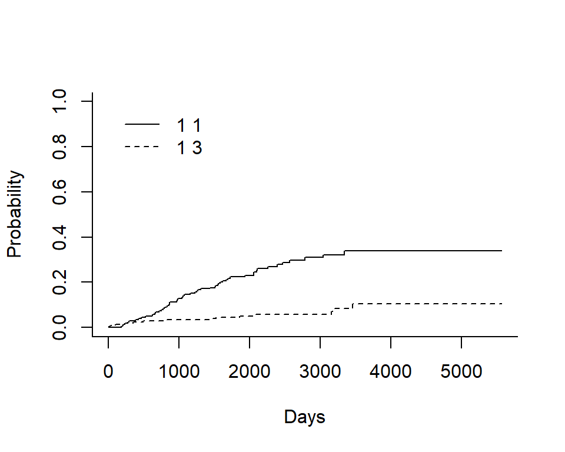
In the legend:
- The first number indicates the group, in this case there is only an overall estimate so it is \(1\) for both
- The second number indicates the event type, in this case the solid line is \(1\) for death from melanoma and the dashed line is \(3\) for death from other causes
Plot the cumulative incidence - ggcompetingrisks
We can also plot the cumulative incidence using the ggscompetingrisks function from the survminer package.
In this case we get a panel labeled according to the group, and a legend labeled event, indicating the type of event for each line.
Notes
- you can use the option
multiple_panels = FALSEto have all groups plotted on a single panel - unlike base
Rthe y-axis does not go to 1 by default, so you must change it manually
ggcompetingrisks(ci_fit)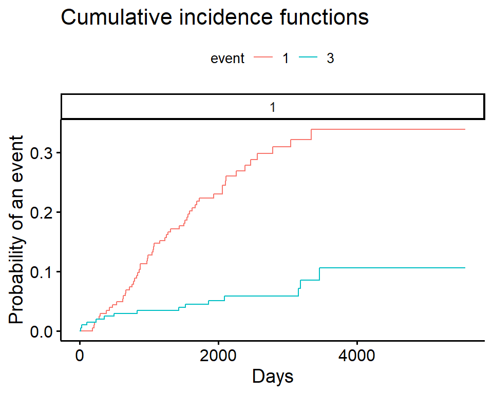
Compare cumulative incidence between groups
In cuminc Gray’s test is used for between-group tests.
As an example, compare the Melanoma outcomes according to ulcer, the presence or absence of ulceration. The results of the tests can be found in Tests.
ci_ulcer <-
cuminc(
ftime = Melanoma$time,
fstatus = Melanoma$status,
group = Melanoma$ulcer,
cencode = 2
)
ci_ulcer[["Tests"]]## stat pv df
## 1 26.120719 3.207240e-07 1
## 3 0.158662 6.903913e-01 1Plot cumulative incidence according to group - ggcompetingrisks
ggcompetingrisks(
fit = ci_ulcer,
multiple_panels = FALSE,
xlab = "Days",
ylab = "Cumulative incidence of event",
title = "Death by ulceration",
ylim = c(0, 1)
)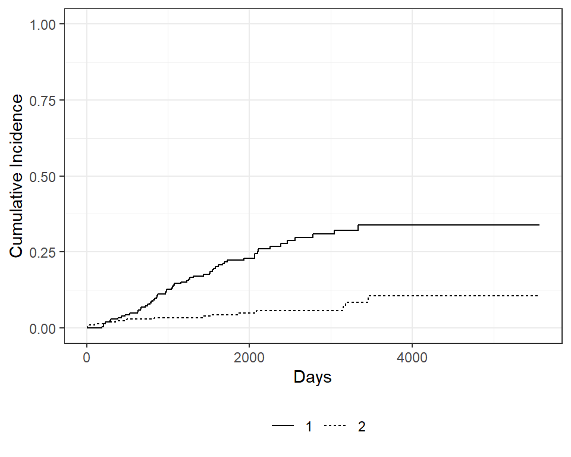
Plotting cumulative incidence by group - manually
Note I personally find the ggcompetingrisks function to be lacking in customization, especially compared to ggsurvplot. I typically do my own plotting, by first creating a tidy dataset of the cuminc fit results, and then plotting the results. See the source code for this presentation for details of the underlying code.
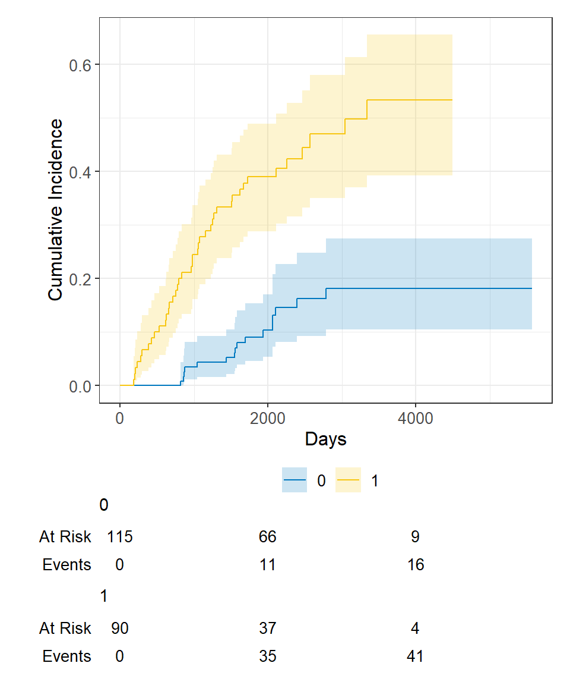
Plotting a single event type - manually
Often only one of the event types will be of interest, though we still want to account for the competing event. In that case the event of interest can be plotted alone. Again, I do this manually by first creating a tidy dataset of the cuminc fit results, and then plotting the results. See the source code for this presentation for details of the underlying code.
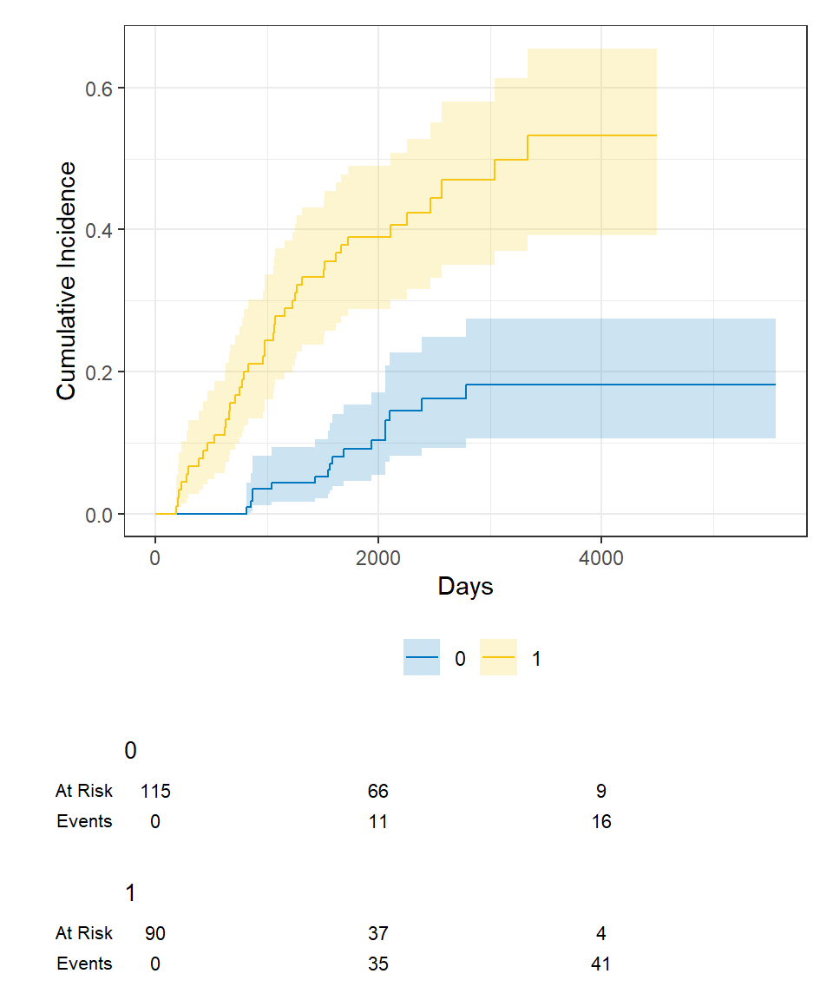
Add the numbers at risk table
You may want to add the numbers of risk table to a cumulative incidence plot, and there is no easy way to do this that I know of. See the source code for this presentation for one example
- Get a plot from base
R,ggcompetingrisks, orggplot - Get the number at risk table from a
ggsurvplotusing thesurvfitwhere all events count as a single composite endpoint- Force the axes to have the same limits and breaks and titles
- Make sure the colors/linetypes match for the group labels
- Try to get the fontsize to be the same
- Then combine the plot and the risktable. I use the
plot_gridfunction from thecowplotpackage for this- I do NOT know how to change the “Number at risk” text size…
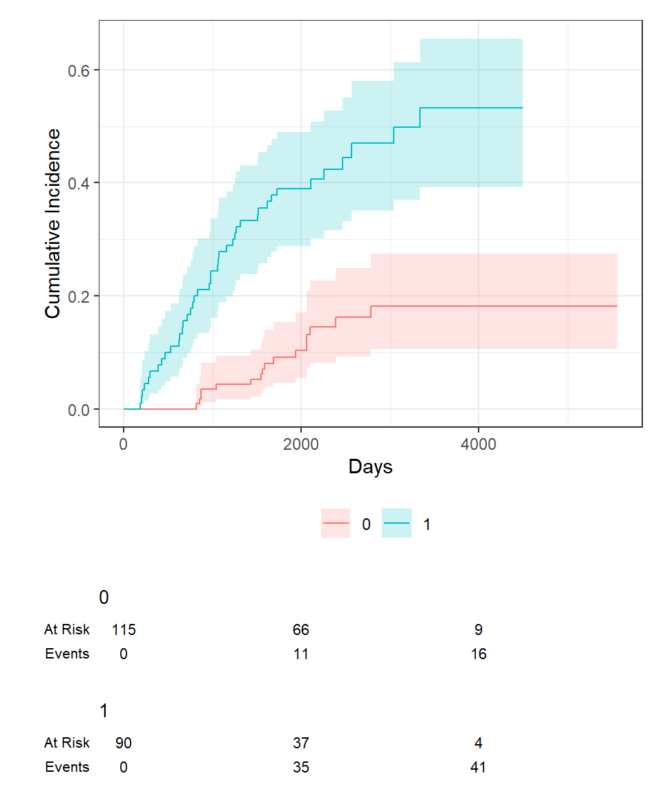
Competing risks regression
Two approaches:
- Cause-specific hazards
- instantaneous rate of occurrence of the given type of event in subjects who are currently event‐free
- estimated using Cox regression (
coxphfunction)
- Subdistribution hazards
- instantaneous rate of occurrence of the given type of event in subjects who have not yet experienced an event of that type
- estimated using Fine-Gray regression (
crrfunction)
Competing risks regression in Melanoma data - subdistribution hazard approach
Let’s say we’re interested in looking at the effect of age and sex on death from melanoma, with death from other causes as a competing event.
Notes:
crrrequires specification of covariates as a matrix- If more than one event is of interest, you can request results for a different event by using the
failcodeoption, by default results are returned forfailcode = 1
shr_fit <-
crr(
ftime = Melanoma$time,
fstatus = Melanoma$status,
cov1 = Melanoma[, c("sex", "age")],
cencode = 2
)
shr_fit## convergence: TRUE
## coefficients:
## sex age
## 0.58840 0.01259
## standard errors:
## [1] 0.271800 0.009301
## two-sided p-values:
## sex age
## 0.03 0.18In the previous example, both sex and age were coded as numeric variables. The crr function can’t naturally handle character variables, and you will get an error, so if character variables are present we have to create dummy variables using model.matrix
# Create an example character variable
chardat <-
Melanoma %>%
mutate(
sex_char = ifelse(sex == 0, "Male", "Female")
)
# Create dummy variables with model.matrix
# The [, -1] removes the intercept
covs1 <- model.matrix(~ sex_char + age, data = chardat)[, -1]
# Now we can pass that to the cov1 argument, and it will work
crr(
ftime = chardat$time,
fstatus = chardat$status,
cov1 = covs1,
cencode = 2
)Formatting results from crr
Output from crr is not supported by either broom::tidy() or gtsummary::tbl_regression() at this time. As an alternative, try the (not flexible, but better than nothing?) mvcrrres from my ezfun package
ezfun::mvcrrres(shr_fit) %>%
kable()| HR (95% CI) | p-value | |
|---|---|---|
| sex | 1.8 (1.06, 3.07) | 0.03 |
| age | 1.01 (0.99, 1.03) | 0.18 |
Competing risks regression in Melanoma data - cause-specific hazard approach
Censor all subjects who didn’t have the event of interest, in this case death from melanoma, and use coxph as before. So patients who died from other causes are now censored for the cause-specific hazard approach to competing risks.
Results can be formatted with broom::tidy() or gtsummary::tbl_regression()
chr_fit <-
coxph(
Surv(time, ifelse(status == 1, 1, 0)) ~ sex + age,
data = Melanoma
)
broom::tidy(chr_fit, exp = TRUE) %>%
kable()| term | estimate | std.error | statistic | p.value | conf.low | conf.high |
|---|---|---|---|---|---|---|
| sex | 1.818949 | 0.2676386 | 2.235323 | 0.0253961 | 1.0764804 | 3.073513 |
| age | 1.016679 | 0.0086628 | 1.909514 | 0.0561958 | 0.9995631 | 1.034088 |
gtsummary::tbl_regression(chr_fit, exp = TRUE)| Characteristic | HR1 | 95% CI1 | p-value |
|---|---|---|---|
| sex | 1.82 | 1.08, 3.07 | 0.025 |
| age | 1.02 | 1.00, 1.03 | 0.056 |
|
1
HR = Hazard Ratio, CI = Confidence Interval
|
|||
Part 4: Advanced Topics
What we’ve covered
- The basics of survival analysis including the Kaplan-Meier survival function and Cox regression
- Landmark analysis and time-dependent covariates
- Cumulative incidence and regression for competing risks analyses
What’s left?
A variety of bits and pieces of things that may come up and be handy to know:
- Assessing the proportional hazards assumption
- Making a smooth survival plot based on \(x\)-year survival according to a continuous covariate
- Conditional survival
Assessing proportional hazards
One assumption of the Cox proportional hazards regression model is that the hazards are proportional at each point in time throughout follow-up. How can we check to see if our data meet this assumption?
Use the cox.zph function from the survival package. It results in two main things:
- A hypothesis test of whether the effect of each covariate differs according to time, and a global test of all covariates at once.
- This is done by testiung for an interaction effect between the covariate and log(time)
- A significant p-value indicates that the proportional hazards assumption is violated
- Plots of the Schoenfeld residuals
- Deviation from a zero-slope line is evidence that the proportional hazards assumption is violated
mv_fit <- coxph(Surv(time, status) ~ sex + age, data = lung)
cz <- cox.zph(mv_fit)
print(cz)## chisq df p
## sex 2.608 1 0.11
## age 0.209 1 0.65
## GLOBAL 2.771 2 0.25plot(cz)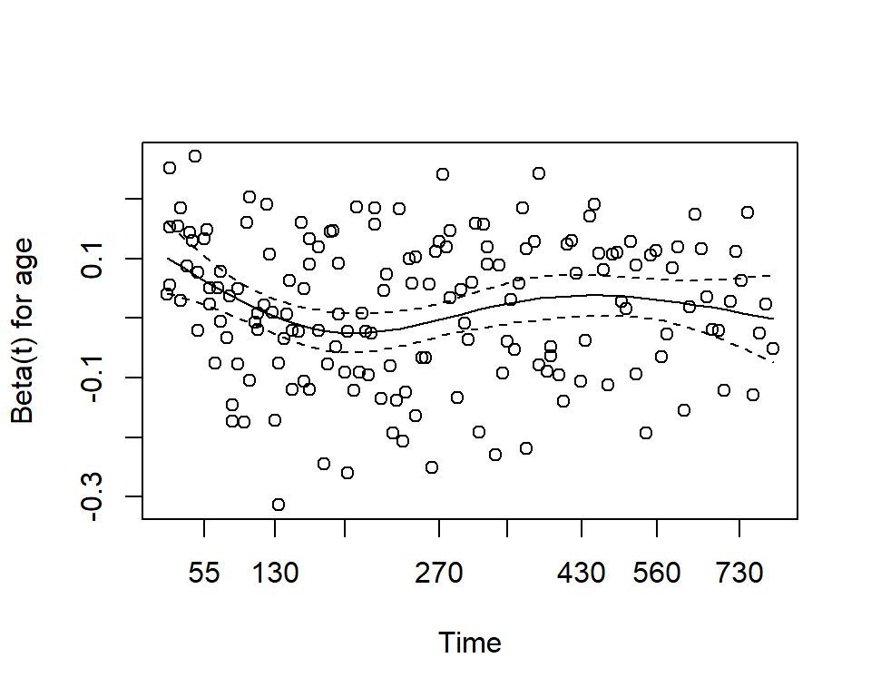
Smooth survival plot - quantile of survival
Sometimes you will want to visualize a survival estimate according to a continuous variable. The sm.survival function from the sm package allows you to do this for a quantile of the distribution of survival data. The default quantile is p = 0.5 for median survival.
library(sm)
sm.options(
list(
xlab = "Age (years)",
ylab = "Time to death (years)")
)
sm.survival(
x = lung$age,
y = lung$time,
status = lung$status,
h = sd(lung$age) / nrow(lung)^(-1/4)
)
- The x’s represent events
- The o’s represent censoring
- The line is a smoothed estimate of median survival according to age
- In this case, too smooth!
The option h is the smoothing parameter. This should be related to the standard deviation of the continuous covariate, \(x\). Suggested to start with \(\frac{sd(x)}{n^{-1/4}}\) then reduce by \(1/2\), \(1/4\), etc to get a good amount of smoothing. The previous plot was too smooth so let’s reduce it by \(1/4\)
sm.survival(
x = lung$age,
y = lung$time,
status = lung$status,
h = (1/4) * sd(lung$age) / nrow(lung)^(-1/4)
)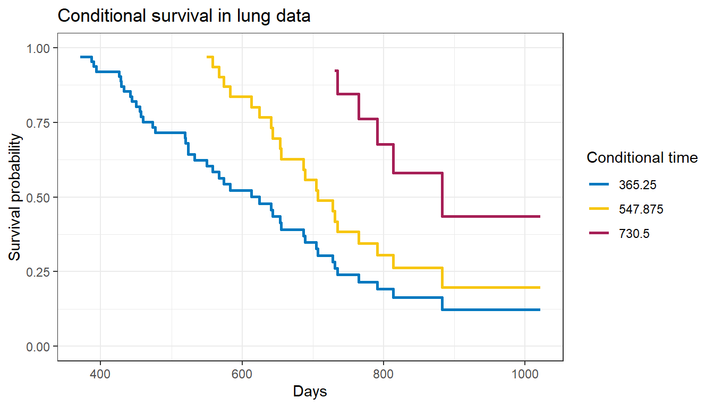
Conditional survival
Sometimes it is of interest to generate survival estimates among a group of patients who have already survived for some length of time.
\[S(y|x) = \frac{S(x + y)}{S(x)}\]
- \(y\): number of additional survival years of interest
- \(x\): number of years a patient has already survived
Zabor, E., Gonen, M., Chapman, P., & Panageas, K. (2013). Dynamic prognostication using conditional survival estimates. Cancer, 119(20), 3589-3592.
Conditional survival estimates
The estimates are easy to generate with basic math on your own.
Alternatively, I have simple package in development called condsurv to generate estimates and plots related to conditional survival. We can use the conditional_surv_est function to get estimates and 95% confidence intervals. Let’s condition on survival to 6-months
remotes::install_github("zabore/condsurv")library(condsurv)
fit1 <- survfit(Surv(time, status) ~ 1, data = lung)
prob_times <- seq(365.25, 182.625 * 5, 182.625)
purrr::map_df(
prob_times,
~conditional_surv_est(
basekm = fit1,
t1 = 182.625,
t2 = .x)
) %>%
mutate(months = round(prob_times / 30.4)) %>%
select(months, everything()) %>%
kable()| months | cs_est | cs_lci | cs_uci |
|---|---|---|---|
| 12 | 0.58 | 0.49 | 0.66 |
| 18 | 0.36 | 0.27 | 0.45 |
| 24 | 0.16 | 0.10 | 0.25 |
| 30 | 0.07 | 0.02 | 0.15 |
| Recall th | at our in | itial \(1\) | -year survival estimate was 0.41. We see that for patients who have already survived 6-months this increases to 0.58. |
Conditional survival plots
We can also visualize conditional survival data based on different lengths of time survived. The condsurv::condKMggplot function can help with this.
cond_times <- seq(0, 182.625 * 4, 182.625)
gg_conditional_surv(
basekm = fit1,
at = cond_times,
main = "Conditional survival in lung data",
xlab = "Days"
) +
labs(color = "Conditional time")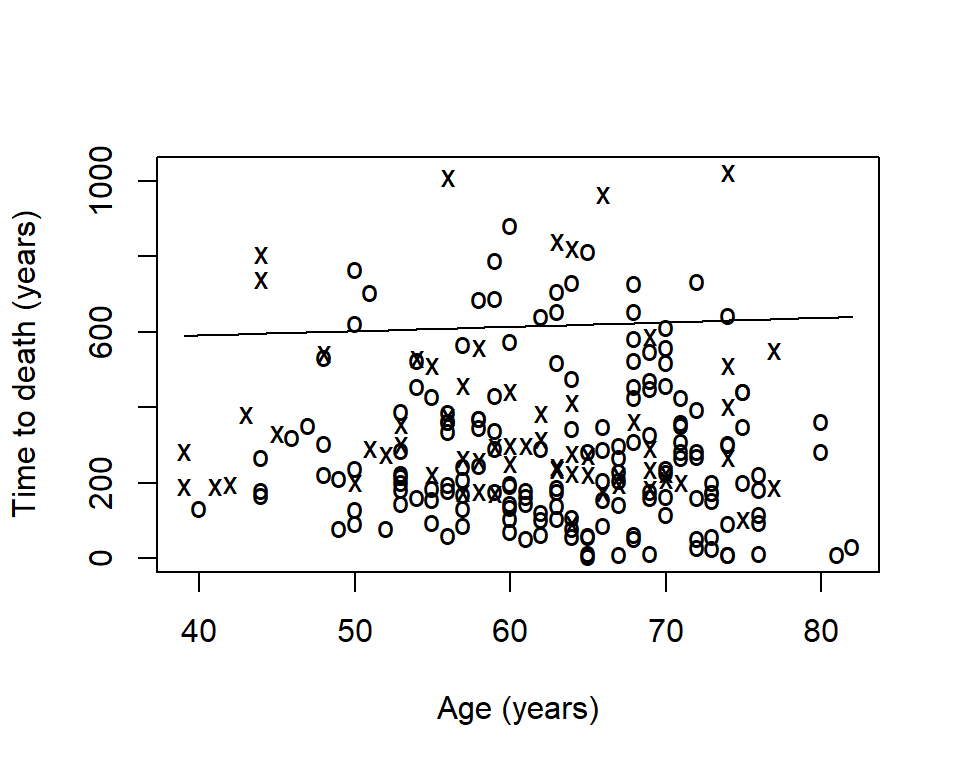
The resulting plot has one survival curve for each time on which we condition. In this case the first line is the overall survival curve since it is conditioning on time 0.
knit_exit()